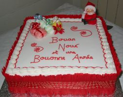
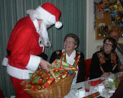

Bouônjour bouonnes gens. Ch'est Geraint Jennings tchi vos présente la Lettre Jèrriaise chutte sémaine.

À forche dé crier Noué, i' veint. Et nos v'chîn arrivés au mais d'Dézembre. La Fête dé Noué est en allant, j'avons chanté des cantiques en Jèrriais en Ville chutte sémaine auve des mousses et des grandes pèrsonnes, et les c'mîns et les boutiques sont êcliaithis et décothés coumme dé couôteunme. Tout coumme, y'a ieu du brit et du hèrtchîn - des batâles entouor la tcheût'tie dé Noué et l'souô-disant s'gret entouor les célébrités tchi 'taient pouor lanchi l's illeunminâtions. Mais ch'n'est pon ravissant, car nou sait qu'i' y'a tréjous des troubl'ye-fêtes même à chutte saîson-chîn.
Ch'est à espéther qu'i' n'y'étha pon d'troubl'ye-fêtes au Sèrvice dé Noué d'L'Assembliée d'Jèrriais. Lé sèrvice s'sa à l'églyise dé Saint André à la Preunmié Tou, Sanm'di lé douze dé Dézembre. Èrmèrtchiz bein bouonnes gens, lé sèrvice s'en va c'menchi à 6h30 du sé.
Auprès l'sèrvice y'étha un souper dans la salle d'l'églyise. Les titchets pouor lé souper sont à vendre à l'avanche pouor £10. Résèrvez vos titchets, s'i' vos pliaît, ...
Lé six d'Dézembre ch'est la Saint Nic'lesse. Nic'lesse, tchi 'tait l'êvêque dé Myre, dans la P'tite Âsie tch'est achteu en Turtchie, est l'patron des mousses et d's êtudgiants, des vièrs garçons, des navidgants, des prêteurs et d'un tas d'aut's dgaîngues et pliaiches. S'lon la légende, l'êvêque donnit des poutchies d'or et v'là tch'înspithit la couôteunme dé donner des présents au mais d'Dézembre. Ch'est en tchi Saint Nic'lesse est iun d's originnes dé Papa Noué - et l'nom Santa Claus veint du Hollandais Sinterklaas.
Ès Pays Bas, ch'est la couôteunme dé donner des présents ès mousses à la Saint Nic'lesse, et ch'est Saint Nic'lesse tchi veint distribuer les présents. Y'a la même couôteunme étout en Belgique, en Fliandres, en Alsache, en Lorraine, et Saint Nic'lesse viage étout par l'Allemangne, l'Autriche, la Polongne et d'aut's pays.
Lé saint a ses assistants étout. Car, si ch'est Saint Nic'lesse tchi donne des présents ès bouôns garçons et bouonnes fil'yes, tch'est qu'en est pouor les mousses tchi n'ont pon 'té bouôns? Dans l'Nord d'la France, ch'est l'Père Fouettard tch'accompangne lé saint et tch'est s'posé dé v'nîn fouôter les mauvais. Ès Pays Bas, ch'est l'Nièr Pièrrot, un p'tit dgiâbliotîn, ou un garçon ramonneux ou un mouaure Afritchain s'lon les théories, tchi porte la pouque à Saint Nic'lesse et un roe, tch'est eune brînge atout tchi vrédîndgi les mauvais. En Autriche, ch'est l'Krampus, eune manniéthe dé ouéthou, tchi veint m'nichi les mousses - et les pathents à lus dgèrni qué s'i' font du mêché l'Krampus les happ'tha et les mettra dans sa pouque.
Mais tch'est qu'Papa Noué apporte en Jèrri. Fraînque Le Maistre nos racontit les souhaits d'un mousse coumme chennechîn:

Quand Papa Noë veindra
J'veurs qu'i' m'donne un tas d'tchi -
Tout pliein d'bouon chocolat,
D's oranges, toutes sortes d'fruit,
Des figues et des raisîns,
Eune grand' papesée d'chucrîns.
Un livre dé p'tites histouaithes
Atou des bieaux portraits,
Des pommes et pis accouaithe
Des almandes et des nouaix,
Des châtaines, des codrettes,
Ma cauche plieine dé belles jouettes.
Eune boêtée d'rouoges soudards
Et pis des p'tits bliancs j'vaux;
Qu'i' pense à des pétards
Et à des dominnos,
Et pis j'mé graiethais d'charme
D'un tambour et d'eune arme -
Marbres, canif et topie,
Des belles gammes, eune trompette -
Ma liste est-alle finnie? -
Tout l'restant d'sa poutchette;
V'là tout chein qu'j'veurs.
Assa,Quand Papa Noë veindra!
Assa l'mais d'Dézembre est pliein d'traditions dans touos les pays d'Ûrope, et j'n'ai pon mentionné les vielles crianches d'la Saint Thonmas et d'Noué en Jèrri.
Mais n'oubliez pon d'acater vos titchets pouor lé souper auprès l'sèrvice dé Noué. Tchi sait? Papa Noué et sa grande blianche barbe pouôrrait bein pâsser là-bas duthant la séthée dithe bônsouair et Bouôn Noué à touos les Jèrriais tchi veindront.
Geraint Jennings
Viyiz étout: